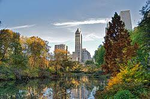

Parque das Águas de Caxambu
Caxambu - Minas Gerais - Rua João Carlos, 100 - Centro
O parque possui 12 fontes de água mineral com propriedades curativas diferentes. Opções para a prática de esportes. Piscina semi-olímpica com água mineral (adulto e criança) e um gêiser que explode três vezes ao dia.